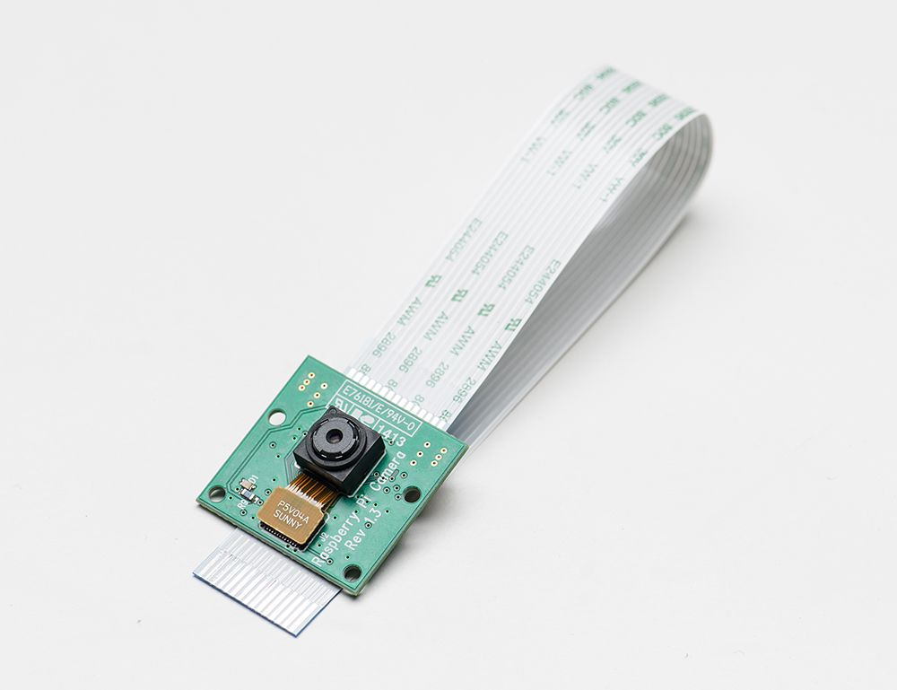
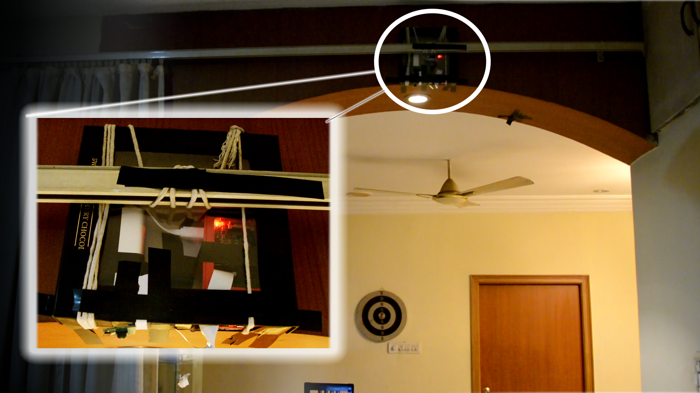
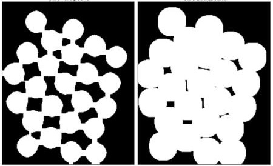
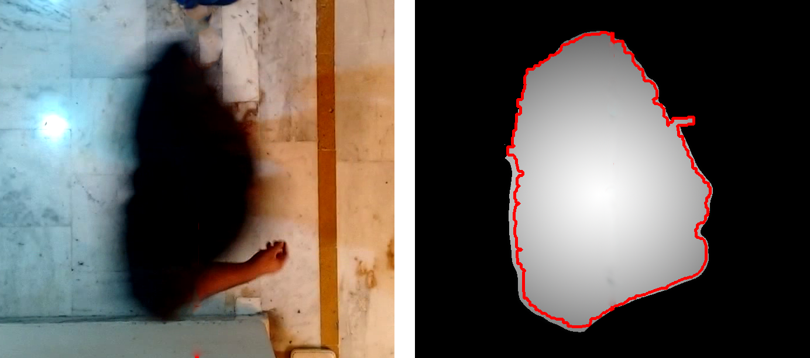
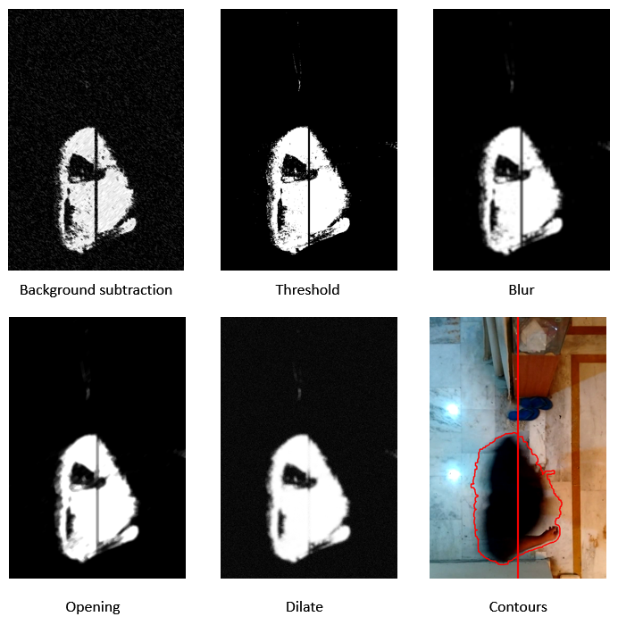
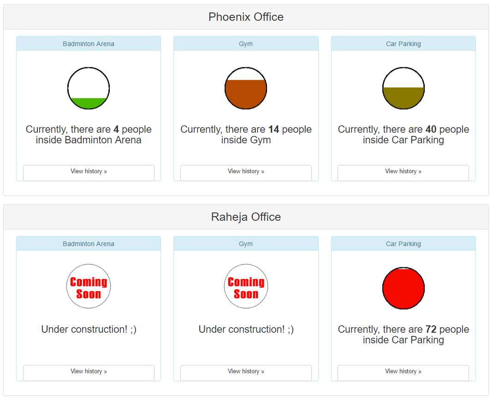
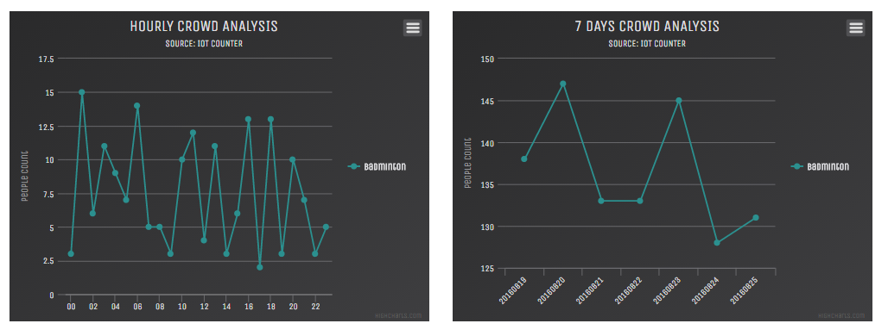

Crowd Analyser using IoT
What is
IoT?
The Internet of Things (IoT) is a system of interrelated computing devices, mechanical and digital machines, objects and animals which is provided with the ability to transfer data over a network without requiring human-to-human or human-to-computer interaction. It allows objects to be sensed and controlled remotely across existing network infrastructure.
Huh??
What is Crowd Analyser?
Technologies explored


Project workflow
Setup and configuration phase

Process phase
- Capture frame
- Image processing algorithms
- Nearest neighbour algorithm
Background subtraction

Threshold

Blur

Opening

Dilate
Finding contours
Frame processing
Analyse phase
Analyse phase

Video Demo
Click here for video demo
Future scope
- Integration with machine learning for future prediction
- Notification feature
- Track parking availability
- More IoT Solutions
- Cardless inout entry
- Automatic AC temparature control